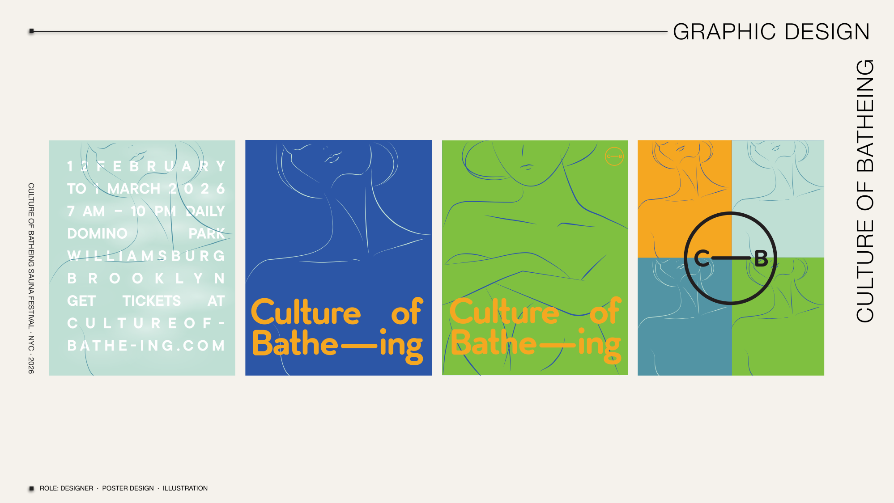
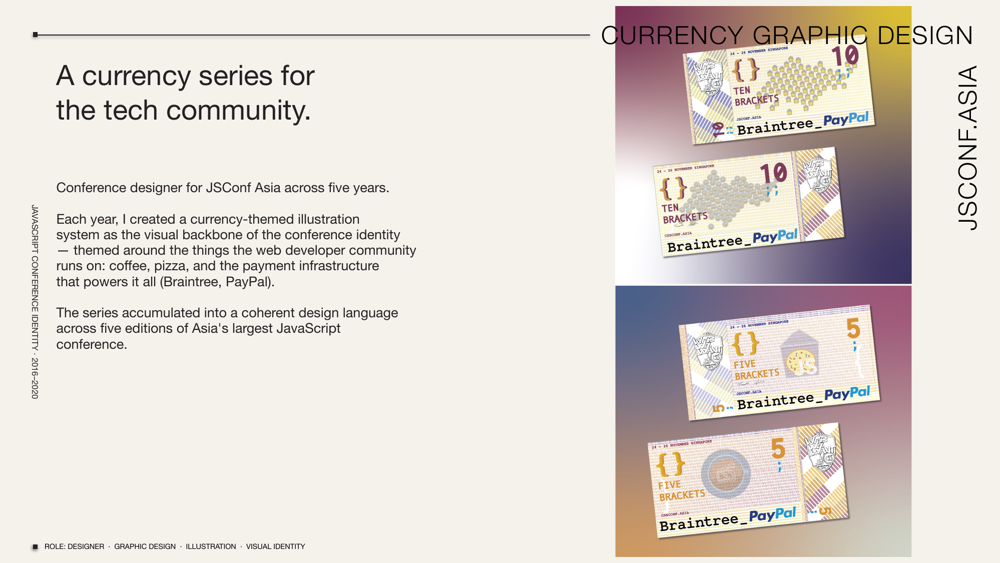
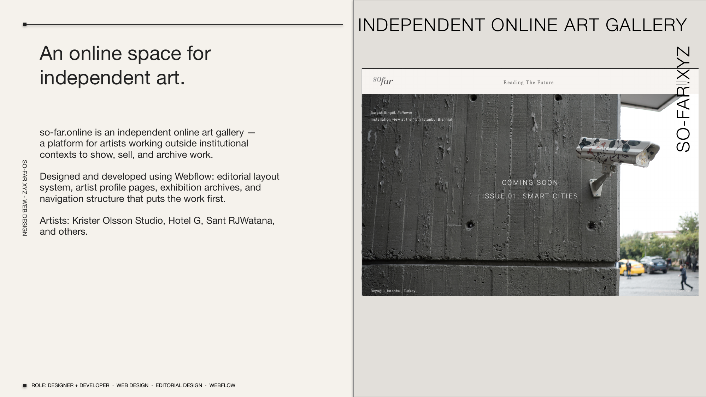
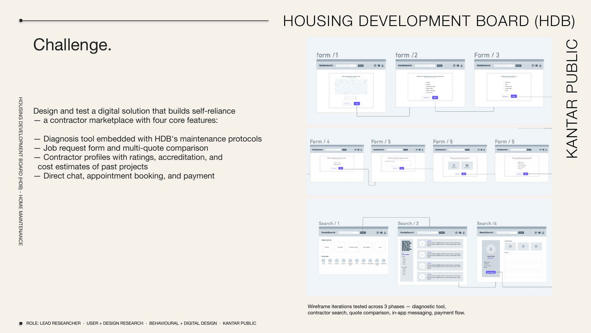
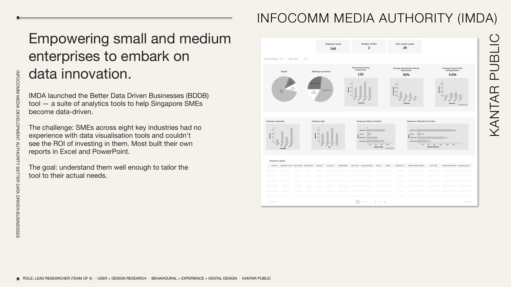
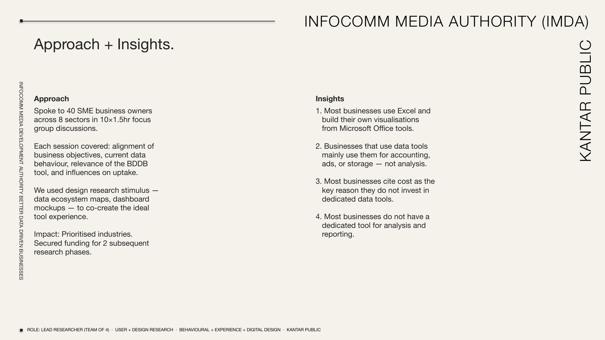
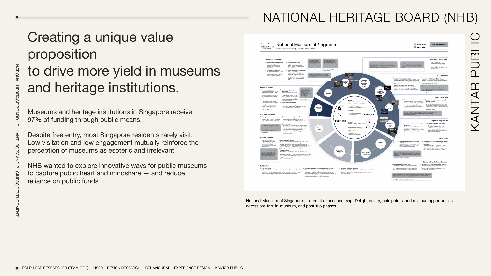

culture of bathe-ing
Sauna festival poster series. Four posters for Culture of Bathe-ing at Domino Park, Williamsburg, Brooklyn — a winter sauna event running February to March 2026. Each poster develops a different visual language around the same identity: line drawings of bodies at rest, a restrained palette of yellow, green, blue, and off-white, and Helvetica set large.
Role: designer · poster design · illustration
2026 · New York

jsconf asia
A currency series for the tech community. Conference designer for JSConf Asia across five years. Each year, a currency-themed illustration system was created as the visual backbone of the conference identity — themed around the things the web developer community runs on: coffee, pizza, and the payment infrastructure that powers it all (Braintree, PayPal). The series accumulated into a coherent design language across five editions of Asia's largest JavaScript conference.
Role: graphic designer · illustration · visual identity
2016–2020 · Singapore

so-far.online
An online space for independent art. so-far.online is an independent online art gallery — a platform for artists working outside institutional contexts to show, sell, and archive work. Designed and developed using Webflow: editorial layout system, artist profile pages, exhibition archives, and navigation structure that puts the work first. Artists include Krister Olsson Studio, Hotel G, Sant RJWatana, and others.
Role: designer + developer · web design · editorial design
Stack: Webflow
so-far.online →


hdb handysearch
Building self-reliance for home maintenance and repairs. HDB needed to help homeowners find, vet, and hire contractors on their own terms — reducing call volume while improving trust. The result was a contractor marketplace with four core features: a diagnosis tool embedded with HDB's maintenance protocols, job request form and multi-quote comparison, contractor profiles with ratings, accreditation, and cost estimates of past projects, and direct chat, appointment booking, and payment. Wireframe iterations tested across three phases: diagnostic tool, contractor search, quote comparison, in-app messaging, payment flow.
Role: lead researcher · user + design research · behavioural · digital design
Client: Housing Development Board (HDB) · Kantar Public Singapore
2021–2023


imda — better data driven businesses
Empowering small and medium enterprises to embark on data innovation. IMDA launched the Better Data Driven Businesses (BDDB) tool — a suite of analytics tools to help Singapore SMEs become more data-driven. The challenge: SMEs across eight key industries had no experience with data visualisation tools and couldn't see the ROI of investing in them. Most built their own reports in Excel and PowerPoint. Spoke to 40 SME business owners across 8 sectors in 10×1.5hr focus group discussions. Each session covered alignment of business objectives, current data behaviour, relevance of the BDDB tool, and influences on uptake.
Role: lead researcher · user + design research · behavioural · experience · digital design
Client: Infocomm Media Development Authority (IMDA) · Kantar Public Singapore
2021–2023

nhb — national heritage board
Creating a unique value proposition to drive more yield in museums and heritage institutions. Museums and heritage institutions in Singapore receive 97% of funding through public means. Despite free entry, most Singapore residents rarely visit. Low visitation and low engagement mutually reinforce the perception of museums as esoteric and irrelevant. NHB wanted to explore innovative ways for public museums to capture public headspace and mindshare — and reduce reliance on public funds. Deliverable: National Museum of Singapore current experience map — delight points, pain points, and revenue opportunities across pre-trip, in-museum, and post-trip phases.
Role: lead researcher · user + design research · behavioural · experience design
Client: National Heritage Board (NHB) · Kantar Public Singapore
2021–2023